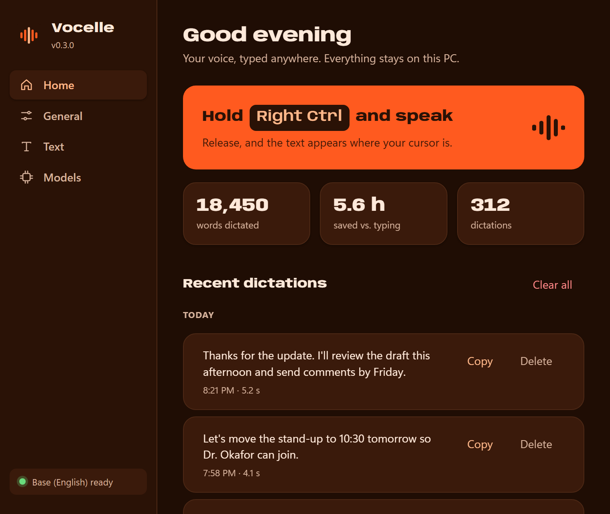
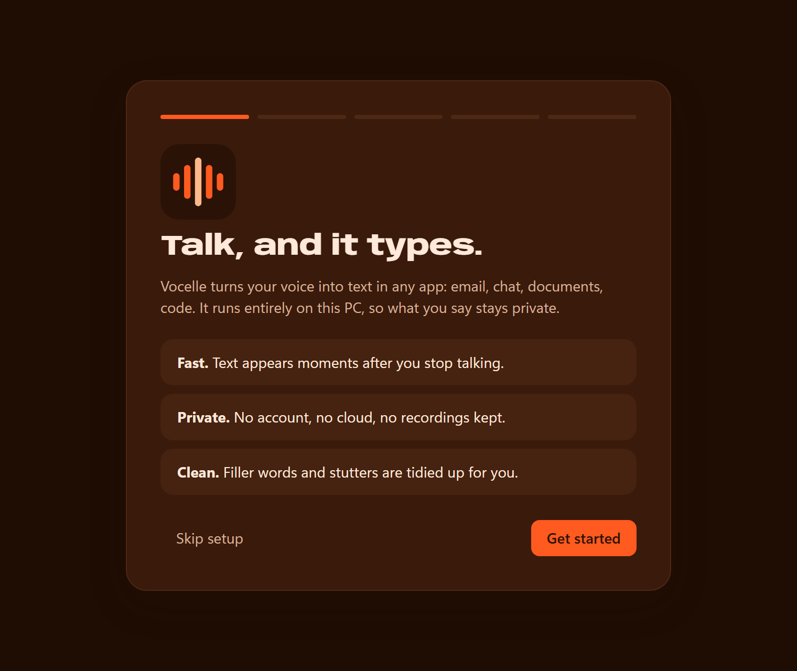
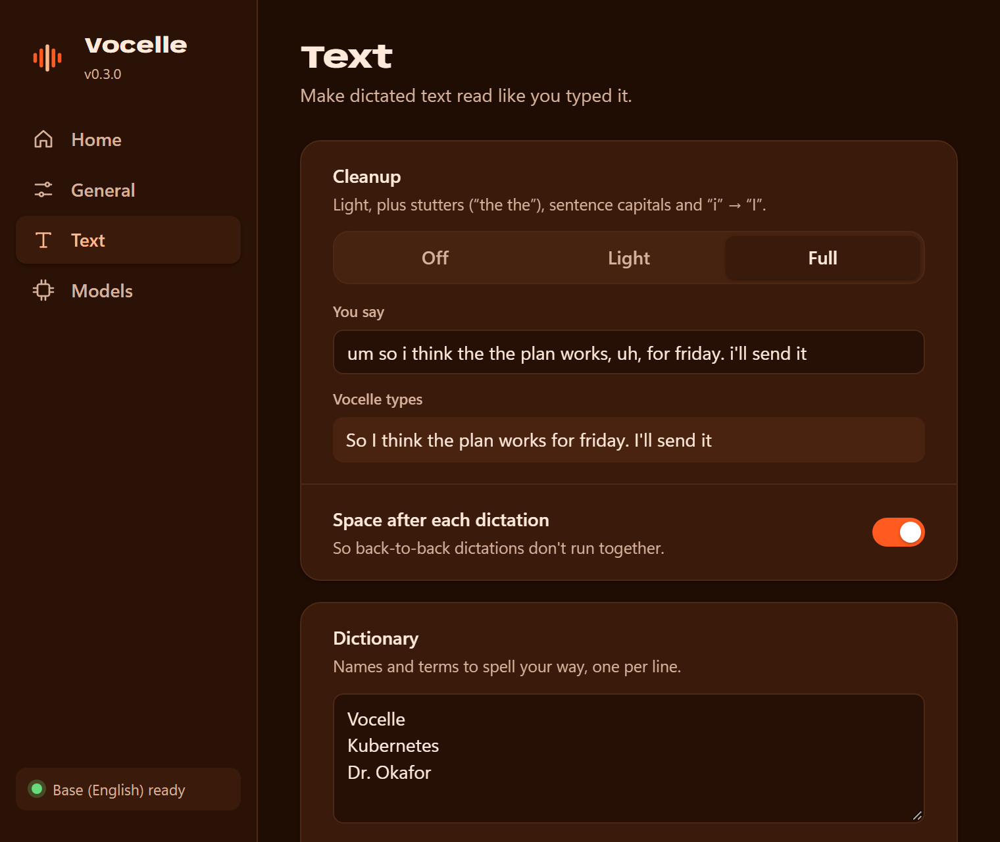
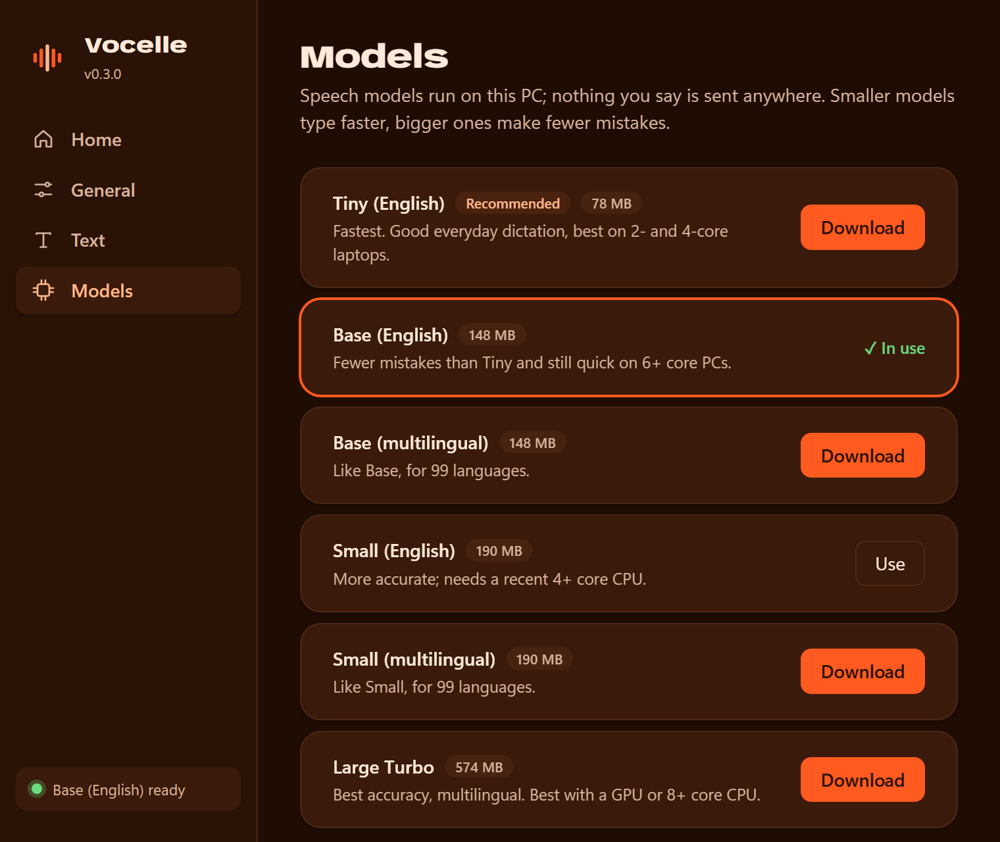

Hi Sarah,
The new onboarding flow looks great. Can we ship it on Thursday?
Private voice typing for Windows and Linux. Vocelle listens and writes on your own computer, in any app, and your voice never leaves it.
Hold it to try, or hold Right Ctrl on your keyboard.
Right Ctrl, or any key you choose. A small pill appears above the taskbar, and it never takes focus from what you're writing.
Ums, false starts and doubled words included. Everything is heard on your own computer.
The fillers fall away, capitals and punctuation fall into place, and the sentence lands at your cursor.
Based on typical averages: about 40 words a minute typing, about 150 speaking.
If it has a text cursor and accepts paste, Vocelle writes into it. Your clipboard is put back afterwards, images and formatting included.
Hi Sarah,
The new onboarding flow looks great. Can we ship it on Thursday?
Is the Windows build ready?
It passed every check, so we can ship it this afternoon.
Fewer setup steps, a faster first dictation and a clearer model download.
// Transcribe finished phrases while the key is held,
// so only the last few seconds are left on release.
fn transcribe_ahead(app: &AppHandle) {Call the dentist tomorrow at ten. Buy milk, eggs and bread.
best quiet keyboards for writing at night
Other dictation apps send your voice to their servers. Vocelle doesn't need a connection at all. Switch on airplane mode and it works exactly the same.
Choose how much tidying you want, and teach it the names you use so they come out right every time.
You saidum so i think the the plan works, uh, for friday. i'll send it to dr okafor
Vocelle types
Vocelle lives in your tray. Open it to see what you've dictated, tune the cleanup, or switch speech models.




Yes. Dictation, cleanup, the dictionary and history are free, with no word limits and no account.
Only once, to download a speech model when you set it up. After that, Vocelle works completely offline.
Anything with a text cursor that accepts paste: email, chat, documents, browsers and code editors. On Linux, terminals that paste with Ctrl+Shift+V aren't supported yet.
Windows 10 or 11 (64-bit), or a Linux desktop with an X11 session; a processor with AVX2 (Intel 2013 or later, AMD 2015 or later); and a microphone. Four gigabytes of memory is enough for the recommended model.
The installer isn't code-signed yet, so Windows SmartScreen asks first. Click More info, then Run anyway. Signing is planned.
Version 0.3.2 · What's new · Guide